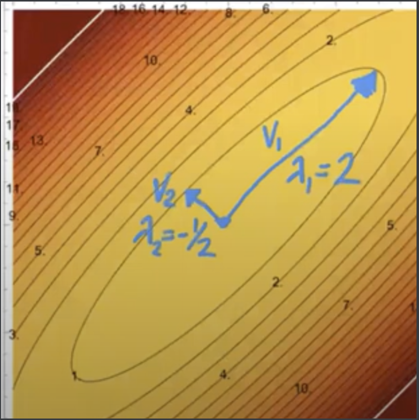
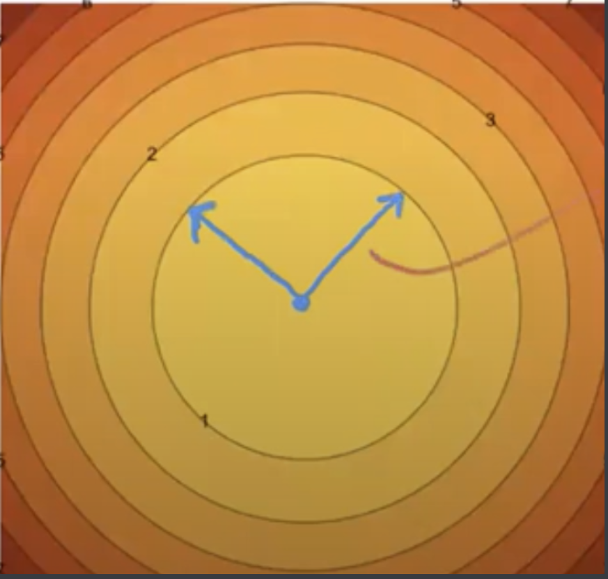
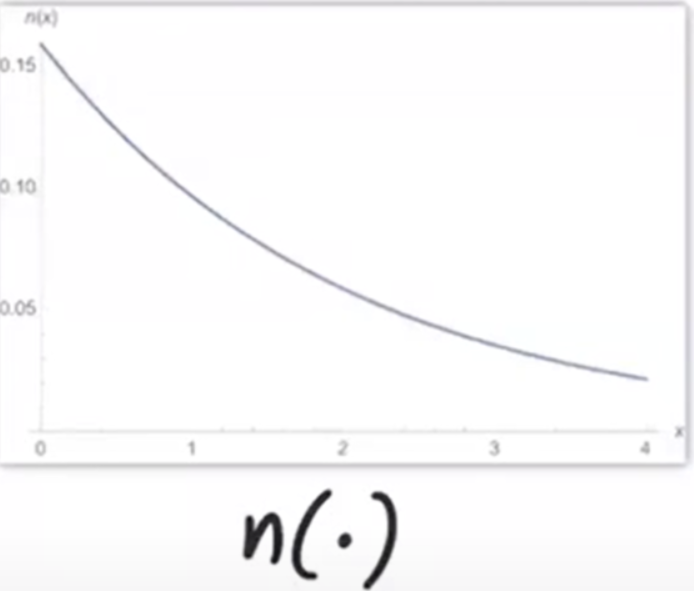

Eigenvectors and Quadratic Forms¶
(Eigenvector review)
Quadratic Forms¶
Let’s talk about a way to visualize symmetric matrices. This way, we can gain intuition about what a matrix means, what linear transformations mean.
The quadratic form gives us hints about how applying the matrix affects the length of a vector.
Let’s say we have a vector \(z\),. If we plot \(||z||^2 = z^Tz\) in space, we get a nice paraboloid.
What happens if we insert a (symmetric) matrix in the norm? Specifically, \(||A^{-1}x||^2 = x^TA^{-2}x\)? This is called the quadratic form of \(A^{-2}\). What does this look like?
Notably, we can use eigenvectors to transform \(||z||^2\) to \(||A^{-1}x||^2\), and vice versa.
We know \(z^Tz\) is quadratic and isotropic: the curvature is the same in every direction, and all isosurfaces are spheres.
On the other hand, \(x^TA^{-2}x\) is NOT isotropic in general, unless \(A\) is some multiple of the identity matrix. So its isosurfaces will be ellipsoids.
So fundamentally we have two different spaces: \(z\)-space and \(x\)-space. We transform from one space to another by transformation matrix \(A\), specifically, through the equation \(x = Az\).
Let’s say \(A = \begin{bmatrix} 3/4 & 5/4\\ 5/4 & 3/4 \end{bmatrix}\). Now here’s the really interesting part: the eigenvectors match the axes of the ellipse in its contour plot.
So given we start off with unit vectors pointing off in the same direction as eigenvectors \(v_1, v_2\) in \(z\)-space:
After applying \(A\), one vector gets mapped to a vector twice as long (corresponding to eigenvector 2), and another is halved and negated (eigenvector -1/2).
The way A maps a vector applies to any point on the isocontours. In other words, a point in \(z\)-space gets mapped to a new point in \(x\)-space using the eigenvalue as a multiplier. However, the eigenvalues themselves stay the same!
In general, matrix \(A\) maps the (unit) circle in \(z\)-space to the corresponding ellipse in \(x\)-space. Let’s try to verify this formally.
If we draw the contour plot for \(||A^{-1}x||^2 = 1\), and look at the contour line with isovalue 1, that is the equation of an ellipsoid with axes as eigenvectors \(v_1,...v_n\) and radii \(\lambda_1,...,\lambda_n\). This is true because if \(A^{-1}x = v_i\) where \(v_i\) is length 1, that means that \(v_i\) lies on the unit circle, and thus means that \(x = Av_i\) will have length \(\lambda_i\). This ultimately means that \(Av_i\) lies on the ellipsoid.
A special case arises when \(A\) is diagonal. This means the eigenvectors will be the coordinate axes- the ellipsoid is axis-aligned.
Consider a symmetric matrix \(M\). It is positive definite if \(w^TMw > 0\) for all \(w \neq 0\). Equivalently, a symmetric matrix is PD if all its eigenvalues are positive. A positive semidefinite matrix is when \(w^TMw \ge 0\), or equivalently, all eigenvalues of \(M\) are nonnegative. Finally, a symmetric matrix is indefinite if it has both one positive eigenvalue AND one negative eigenvalue.
So now we can represent \(||A^{-1}x||^2 = x^TA^{-2}x\) as \(x^TMx\), where \(M = A^{-2}\). \(M=A^{-2}\) must be positive definite: it is squared and zero eigenvalues cannot exist.
What about the isosurfaces of \(x^TMx\) for a positive definite matrix \(M\)? The contour plot of an \(n\)-th quadratic form will have ellipsoidal isosurfaces, with radii determined by eigenvalues determined by \(A = M^{-1/2}\). The eigenvalues of \(M^{-1/2}\) are just the eigenvalues raised to the negative 1/2 themselves.
There is another case when \(M\) is only positive semidefinite. The isosurfaces generally aren’t ellipsoids any more: they are cylinders.
So the general rule is this: you’ll be given \(x^TA^{-2}x\), and want some geometric intuition. Getting the eigenvalues of \(A = M^{-1/2}\) will give us the geometric eigenvectors + radii we want. In the case of the anisotropic Gaussian, an important term is \(x^T\Sigma^{-1}x\): so we get \(A = \Sigma^{1/2}\).
Building a Quadratic¶
Given eigenvectors and eigenvalues, we can construct a matrix with those eigenvectors/values using singular value decomposition (SVD). It has something to do with \(A = V \Lambda V^T = \sum_{i=1}^{n}\lambda_iv_iv_i^T\). This is called the outer product matrix. Each summation has rank 1, and each term contributes one eigenvector to the sum. So the end sum has all the eigenvectors and values we’ve asked for!
\(A = V \Lambda V^T\) is a matrix factorization called eigendecomposition. Every real symmetric matrix has an eigendecomposition.
We can think of \(\Lambda\) as a diagonalized version of \(A\): it has stretching terms via eigenvalues, but in the coordinate system of the eigenvectors this time.
This means that \(V^T\) is a matrix that rotates the ellipsoid to be axis-aligned.
So \(Az\) can be broken down into 3 steps: \(V\Lambda V^Tz\). The first transformation \(V^Tz\) rotates the coordinate system so the eigenvectors are now aligned with the coordinate system. The applying \(\Lambda\) stretches/shrinks along those new axes. Finally, \(V\) reverses the rotation back to the original coordinate system.
So now that we’ve chosen our ellipsoid axes/radii as eigenvectors/values, then getting those axes/radii from a matrix is just a matter of taking the quadratic form of \(A^{-2}\). So we just take \(||A^{-1}x||^2 = 1\) or \(x^TA^{-2}x = 1\) (these are isocontours).
So we’ve specified a paraboloid whose isosurfaces are ellipsoids with specified axes and radii.
Note that \(A^2 = V\Lambda^2V^T\). So when we square a matrix, we square the eigenvalues while retaining the same exact eigenvectors.
So given a symmetric PSD matrix, like the covariance matrix \(\Sigma\) of a multivariate Gaussian distribution, we can find the symmetric square root by taking the eigendecomposition:
Compute eigenvectors/vals of \(\Sigma\)
Take square roots of \(\Sigma\)’s eigenvalues.
Reassemble matrix \(A\) with the same eigenvectors but square-rooted eigenvalues.
Anisotropic Gaussian¶
Now, \(X \sim N(\mu, \Sigma)\) allows different variances along different directions. Remember \(X\) and \(\mu\) are \(d\)-dimensional vectors, while \(\Sigma\) is a \(d \times d\) matrix. The PDF of this distribution:
\(\Sigma\) is a PSD covariance matrix, and \(\Sigma^{-1}\) is a PSD precision matrix.
Now let’s write our density as a composition of two functions; \(f(x) = n(q(x))\). \(q(x) = (x-\mu)^T\Sigma^{-1}(x-\mu)\). \(n\) is a scalar exponential mapping, while \(q\) is a vector-to-scalar quadratic mapping.
The important part: \(n\) DOES NOT CHANGE THE ISOSURFACES OF \(\Sigma\). Generally, given a monotonic \(n\) that maps \(R \to R\), isosurfaces of \(n(q(x))\) are the same as \(q(x)\). (Isovalues will be different, however).
Look at \(n\):
Covariance¶
Consider \(R,S\) as two random variables- either vectors OR scalars. The covariance of \(R\) and \(S\) is defined as
$\(\text{Cov}(R,S) = E[(R-E[R])(S-E[S])^T] = E[RS^T] - \mu_R\mu_S^T\)$.
If \(R_i, R_j\) are independent, then \(\text{Cov}(R_i, R_j) = 0\). The converse is NOT generally true.
If all features of \(R\) are pairwise independent, then \(\text{Var}(R)\) is diagonal.
Var(R) is diagonal AND joint normal iff the Gaussian itself is axis-aligned.